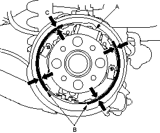
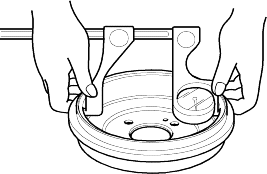

- Check the wheel cylinder (A) for leakage.

- Check the brake linings (B) for cracking, glazing, wear and contamination.
- Measure the brake lining thickness (C). Measurement does not include brake shoe thickness.
4-door:
Brake Lining Thickness:
Standard:
4.0 mm (0.16 in.)
Service Limit:
2.0 mm (0.08 in.)
5-door:
Brake Lining Thickness:
Standard:
4.5 mm (0.18 in.)
Service Limit:
2.0 mm (0.08 in.)
- If the brake lining thickness is less than the service limit, replace the brake shoes as a set.
- Check the hub bearing for smooth operation. If it requires servicing, replace it (see page 18-24).
- Measure the inside diameter of the brake drum with inside vernier callipers.
4-door:
Drum Inside Diameter:
Standard:
199.9 – 200 mm
(7.870 – 7.874 in.)
Service Limit:
201 mm (7.91 in.)
5-door:
Drum Inside Diameter:
Standard:
219.9 – 220 mm
(8.657 – 8.661 in.)
Service Limit:
221 mm (8.701 in.)

- If the inside diameter of the brake drum is more than the service limit, replace the brake drum.
- Check the brake drum for scoring, grooves, corrosion and cracks.